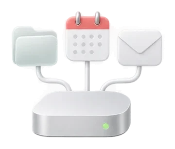
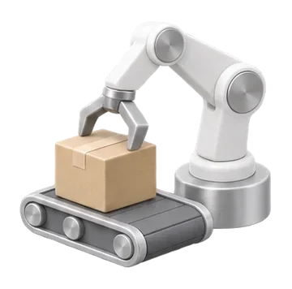
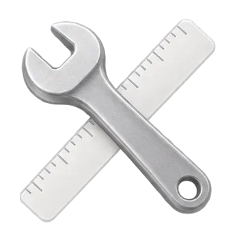

Intégrer l’IA en entreprise
Donner l’IA à vos équipes, ce n’est pas l’intégrer.
L’intégration de l’IA dans les entreprises, c’est Bemyia, l’agence que j’ai fondée : audit, implémentation dans vos outils, formation des équipes, suivi. Vos équipes gagnent des heures chaque semaine, et font ce qu’elles ne savaient pas faire.
Le constat
77 % des ETI utilisent l’IA. Seules 17 % d’entre elles y gagnent du temps.
Le gain
Des semaines deviennent des jours. Et des heures, des minutes.
Des ordres de grandeur, les mêmes pour tous. Chez vous, l’audit les chiffre.
Un prototype d’application
Semaines→ joursde la maquette à une version qu’on peut tester.
Une vidéo de présentation
Jours→ 1 hsans tournage ni studio.

Une recherche d’informations
Heures→ minutesavec les sources.
Et le temps n’est qu’un des gains.
Ces heures se voient en premier. Le reste arrive ensuite, et va souvent plus loin.
- Du temps gagnéDevis, comptes rendus, relances, recherches : en minutes au lieu d’heures.
- De meilleurs résultatsMoins d’erreurs, des réponses plus rapides, des documents plus soignés.
- Moins de prestatairesVisuels, vidéos, traductions, petits outils : une partie se fait en interne.
- Des équipes qui progressentVos équipes savent se servir de ce qui est installé, avec des guides écrits.
- Plus de capacitéLes projets repoussés faute de temps avancent enfin.

Des tâches automatiséesL’IA trie, classe, préremplit et prépare en continu. L’humain valide.
Le rôle
Un responsable de l’IA, pour tous vos services.
L’IA touche chaque service, et personne n’a le temps de l’installer. Je prends ce rôle chez vous : l’audit d’abord, puis ce que vous choisissez.
Administration des ventes
Devis et commandes préparés depuis l’email.
Par exempleUne demande arrive par email : le devis est prêt en 2 minutes, l’assistante vérifie les prix et l’envoie.Service client
Chaque réponse proposée, avec sa source.
Par exemple« Où en est ma commande ? » La réponse est proposée avec le suivi du transporteur. Le conseiller valide.Commercial
Les relances prêtes chaque matin.
Par exempleChaque matin, les relances des devis en attente sont prêtes, écrites pour chaque client.Comptabilité
Pièces triées, relances préparées.
Par exempleLes factures reçues sont lues, classées et rapprochées. Le comptable vérifie seulement les écarts.Marketing
Un contenu décliné pour chaque canal.
Par exempleUn article devient un post LinkedIn, une newsletter et trois visuels, dans votre ton.Ressources humaines
Annonces, accueil, réponses aux salariés.
Par exempleUne annonce rédigée en 10 minutes, et les questions des salariés traitées depuis vos règles.Production
Un planning proposé depuis les contraintes.
Par exempleLe planning de la semaine proposé depuis les commandes et les absences. Le responsable ajuste.Direction
La semaine résumée en une page.
Par exempleChaque lundi, une page : les chiffres clés, les alertes, et les décisions à prendre.
Cas concrets
L’IA exécute. L’humain décide.
Six exemples, service par service.
- Administration des ventes
AvantRecopier la demande de l’email pour faire le devis
Avec l’IALe devis est préparé depuis l’email, l’assistant vérifie les prix
- Service client
AvantChercher la réponse dans la documentation, encore
Avec l’IALa réponse est proposée avec sa source, le conseiller valide
- Commercial
AvantRelancer les devis quand on y pense
Avec l’IALes relances sont prêtes chaque matin, personnalisées
- Comptabilité
AvantRelancer les pièces manquantes une à une
Avec l’IALes relances partent de la liste des pièces, le comptable relit
- Production
AvantFaire le planning à la main
Avec l’IAUn planning proposé depuis les contraintes, le responsable l’ajuste
- Direction
AvantLire tous les rapports pour avoir une vue d’ensemble
Avec l’IAUne synthèse de la semaine : chiffres, alertes, décisions
La méthode
L’audit d’abord. Puis ce que vous choisissez.
- 01Auditer
Je vois comment vos équipes travaillent vraiment, et je recense ce que l’IA peut faire chez vous, chiffré.
- 02Intégrer
L’IA entre dans vos outils et vos habitudes : consignes, modèles, automatisations.
- 03Former
Je forme vos équipes à ce que j’installe, avec des guides écrits.
- 04Suivre
On fait vivre et progresser ce qui est installé.
Pourquoi moi
Je l’ai d’abord fait chez moi.
Plus de 3 start-up cofondées, plus de 10 projets clients, plus de 12 000 heures d’IA depuis 2022. Chaque méthode que propose Bemyia, je l’ai d’abord appliquée à mes propres projets.
L’offre, chez Bemyia
L’audit d’abord. Puis un devis à la carte.
Intégrer l’IA
L’audit recense tout ce que l’IA peut faire chez vous, et le chiffre. Puis un devis à la carte : vous choisissez ce qu’on installe.
- L’analysegratuite, sous 48 h ouvrées
- L’auditd’un service ou de toute l’entreprise
- Un devisà la carte, après l’audit
- 1Analyse
- 2Audit
- 3Implémentation
- 4Suivi
Vous gardez
- Le rapport d’audit, même si vous n’allez pas plus loin
- Les comptes, documents et outils installés chez vous
- Les guides écrits pour vos équipes
- Une ligne directe avec moi
Former vos équipes
À ce qui est installé, avec des guides écrits.
En parler
Un outil sur mesure
Quand il manque un outil.
Construire un produitLes garanties de Bemyia
- La confidentialité d’abordAvant de voir quoi que ce soit, on signe un accord de confidentialité et un accord sur vos données.
- Une date de livraison écriteChaque devis et chaque audit ont une date de livraison au plus tard, écrite avant de commencer.
- Ce qui est fait pour vous vous appartientVos comptes sont toujours à votre nom, et vous gardez tout ce que vous avez payé.
Garanties sous conditions, détaillées dans le devis.
Questions
Vos questions. Mes réponses.
Nos données restent-elles confidentielles ?
Avant de voir quoi que ce soit, on signe un accord de confidentialité et un accord sur vos données. Vos informations restent dans votre propre espace d’IA, à votre nom, et on écrit ensemble ce qui n’y entre jamais.
Que se passe-t-il si l’IA se trompe ?
Ça arrive, et on s’y prépare. Chaque usage est testé sur de vrais exemples validés par votre équipe. Et tout ce qui part chez un client ou un fournisseur est relu par un salarié : l’IA prépare, l’humain valide.
Mes équipes vont-elles vraiment s’en servir ?
C’est le vrai sujet. Je commence par les tâches qui les fatiguent, avec une personne volontaire. Quand un collègue gagne une heure, les autres suivent. Je forme vos équipes à ce que j’installe, avec des guides écrits.
Combien de temps cela demande-t-il à mes équipes ?
Pendant l’audit, chacun répond à des questionnaires, à son rythme. Ensuite, je forme vos équipes à ce que j’installe, avec des guides écrits. Le reste, je m’en occupe.
Quand est-ce livré ?
Chaque devis et chaque audit ont une date de livraison, écrite avant de commencer.
Combien ça coûte ?
L’analyse et l’appel de 20 minutes sont gratuits. L’audit est payant, sur devis. Après l’audit, vous recevez un devis à la carte : vous cochez ce que vous voulez, et rien d’autre. Tout se passe avec Bemyia.
Faut-il des compétences techniques, ou un service informatique ?
Non. Je forme vos équipes à ce que j’installe, avec des guides écrits. S’il faut relier l’IA à un logiciel, je m’en occupe, avec votre prestataire si vous en avez un.
Quelle IA allez-vous utiliser ?
Claude, dans l’abonnement Claude Team de votre entreprise, ouvert à votre nom : vos informations restent dans votre propre espace. Les autres outils dépendent de ce que l’audit trouve.
On en parle ?
Qui pilote l’IA dans votre entreprise aujourd’hui ?
Commencez par l’analyse gratuite de Bemyia : des pistes pour votre entreprise, sous 48 h ouvrées. Ou réservez 20 minutes.
Ou, pour aller plus loin :